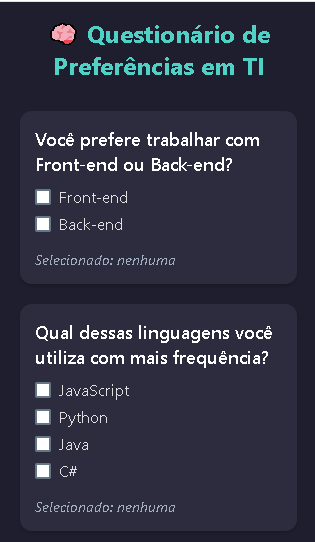

Thiago Fernando - Portfólio
2DS Turma B
Sobre Mim
Olá! Sou um estudante de Desenvolvimento de Sistemas apaixonado por tecnologia e programação. Tenho conhecimentos em Front-End e Back-End e estou sempre buscando novos desafios para aprimorar minhas habilidades. Sou dedicado, estudioso e focado em evoluir constantemente, explorando diferentes áreas do desenvolvimento para criar projetos cada vez mais eficientes e inovadores. 🚀
Projetos de PAM
Esses foram alguns dos trabalhos que eu projetei

Aplicativo de Filmes
Um aplicativo de filmes desenvolvido com React Native. O app possui Login e Home Page com lista de filmes.

Questionário
Um questionário interativo em React Native para profissionais de TI permite selecionar preferências (linguagens, metodologias, etc.) via Checkboxes. O design moderno e acessível emprega o princípio 60-30-10 e um layout responsivo com detalhes visuais.

App de Navegação
App de navegação entre telas com informações sobre Frameworks Front-End.

Projeto Formulário
Projeto focado entender o comando "Row" e "Flex"
Criei um formulário simples com placeholders e input.

Renderização Condicional
Projeto focado em Renderização Condicional
Criei uma Página simples aonde quando o usuário clica no Botão
Aparece um texto vindo do Botão.

Projeto Calculadora
Uma calculadora Simples desenvolvida com React Native. Aonde você coloca os números nos Placeholders e seleciona a operação desejada. Após isso, clica no botão calcular e o resultado aparece na tela.

Projeto Flatilist com Pesquisa de Paises
Este projeto apresenta uma interface construída com React e uma FlatList otimizada para exibir e filtrar informações de países. A funcionalidade de pesquisa permite encontrar dados específicos de forma rápida, seja pelo nome do país ou por sua população.
Projetos de Dart
Projetos em Dart com o Link para o GitHub

Cálculo de Salário em Dart
Código em Dart para cálculo de salário baseado em horas trabalhadas.

Classe Abstrata em Dart
Código em Dart para calcular a área de um triângulo.

Questionário em Flutter
Este é um aplicativo de Questionário em Flutter, que apresenta uma série de perguntas de múltipla escolha (radio buttons e checkboxes) sobre conceitos de Flutter e Dart. O usuário seleciona as respostas e, ao enviar, o aplicativo calcula a pontuação com base nas respostas corretas e exibe o resultado em um diálogo.

4 Class em Dart
Um conjunto de 4 classes em Dart que realiza cálculos diversos, incluindo cálculo de idade, conversão de tempo, cálculo de salário com desconto e horas extras, e cálculo de valor total de vendas com base em preço e quantidade. Cada classe possui métodos específicos para realizar os cálculos e garantir a precisão dos resultados.

Cálculadora Vertical em Flutter
Este código é um aplicativo Flutter que implementa uma calculadora de operações básicas (soma, subtração, multiplicação e divisão). Utiliza uma interface com dois campos de entrada de texto para números e botões que executam as operações. A lógica de cálculo é gerenciada por um StatefulWidget (SomadorForm), que atualiza o estado do resultado com base na operação escolhida. O aplicativo é projetado com uma interface simples e intuitiva.

Data e Ano de Nascimento em Flutter
Um aplicativo Flutter que permite ao usuário inserir seu nome e ano de nascimento, calculando a idade aproximada, dias vividos e meses vividos. Utiliza TextFields para entrada de dados e botões interativos para realizar os cálculos e exibir os resultados na tela.

Valor do Produto por Quantidade em Dart
Um aplicativo Flutter que permite calcular o valor total de um produto com base na quantidade informada pelo usuário. A interface é simples, com um campo para inserir a quantidade e um botão para exibir o resultado.

List em Flutter
Este projeto exibe uma lista customizada de usuários com informações como nome, email e cidade usando o widget ListView.builder do Flutter. A interface é otimizada para uma visualização clara e agradável, com um layout responsivo e bordas arredondadas.

Converter Minutos em Segundos Flutter
Este código cria uma tela onde você pode digitar um número de horas e convertê-las para minutos ou segundos com apenas um clique.

Prova de Dart
Este código define três classes que trabalham com números: uma encontra o maior valor, outra ordena os números em ordem decrescente e a terceira calcula a soma dos três valores. Ele usa listas e comparações para organizar os números e realizar cálculos de forma eficiente.
Obrigado por visitar meu portfólio
Estou sempre aberto para novas oportunidades de trabalho e colaboração
Localização
São josé dos Campos, Brasil
thiagofer.inacio@gmail.com
Telefone
+55 (12) 99110-2899